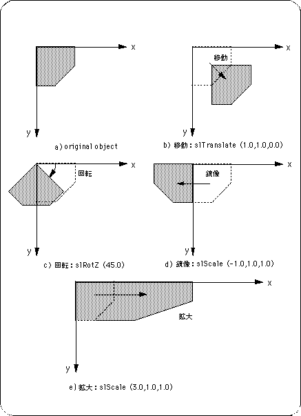

Return to previous page | Return to menu | Go to next page
This section explains the arrangement and transformation of objects in space. There are three types of conversion for objects: move, rotate, and scale.
By using this, you can place objects freely.
Then, we will explain each conversion operation in turn with a sample program.

Note) Angles and variables are shown in degrees and floating for convenience.